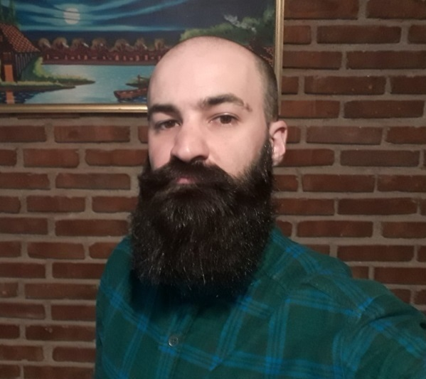

> Saludos! Mi nombre es
Gustavo Marcelo Nuñez
Doctorando especializado en Knowledge Graphs, LLMs y razonamiento neuro-simbólico aplicado a las ciencias del mar.
Soy Licenciado en Informática egresado en la Universidad Nacional de la Patagonia San Juan Bosco (UNPSJB), y actualmente realizo un doctorado en Ciencias de la Computación en la Universidad Nacional del Sur (UNS), Bahía Blanca. Desempeño mis actividades de investigación en CESIMAR-CONICET, Puerto Madryn, Argentina.
Este espacio refleja mis proyectos, investigaciones y publicaciones en IA, sistemas de conocimiento y ciencias del mar.
Si querés saber más, no dudes en contactarme.

GraphRAG · KG · LLM
HERMES
Plataforma web de GraphRAG que genera y compara Knowledge Graphs a partir de un corpus histórico de biología marina argentina (Carrara, 1952). Soporta 6 KGs y 4 LLMs para Q&A en español con verificación simbólica post-hoc.
Aporte: Hace comparable la calidad estructural y el grounding de múltiples KGs y LLMs sobre un mismo corpus.
PythonStreamlitNetworkXGPT-4oMistral
Ver caso de estudio →
Multiagente · Informática marina
AquaMind
Prototipo multiagente que valida taxonomía con WoRMS, recupera ocurrencias de OBIS, las contextualiza mediante ecorregiones MEOW y genera síntesis interpretativas con LLMs.
Aporte: Abstrae APIs, grandes volúmenes de datos y procesamiento geoespacial en un único flujo orientado al científico marino.
PythonWoRMSOBISMEOWLLM agents
Ver caso de estudio →
Bot · Linked Open Data
BotGBIF
Prototipo conversacional que busca datasets mediante la API de GBIF y permite consultar en lenguaje natural tanto su metadata como las ocurrencias de un dataset seleccionado.
Aporte: Convierte una búsqueda técnica en GBIF en una exploración guiada y conversacional de datasets de biodiversidad.
PythonGBIF APINLP
Ver caso de estudio →
Bot · Oceanografía
OBIS Bot
Prototipo conversacional que localiza datasets de OBIS mediante el nombre científico completo y permite consultar su metadata o las ocurrencias de un dataset seleccionado.
Aporte: Reduce las barreras técnicas para explorar datos abiertos de biodiversidad marina desde una interfaz orientada a científicos del mar.
PythonOBIS APILLM
Ver caso de estudio →
Dashboard · LOD
ODP-Dashboard
Plataforma publicada para integrar y visualizar información de biodiversidad marina y oceanografía mediante un modelo conceptual, Linked Open Data y consultas SPARQL.
Aporte: Conecta sensores, especies, ocurrencias y variables ambientales para apoyar investigación y conservación en el Atlántico Sur.
RShinySPARQLLOD
Ver caso de estudio →
Visualización · GIS
Mapyzer
Plataforma web para cargar, organizar y visualizar datos espacio-temporales mediante mapas dinámicos, filtros y una línea de tiempo interactiva.
Aporte: Acerca capacidades GIS a organizaciones con pocos recursos técnicos y datos dispersos o sin georreferenciar.
AngularLeafletPostGIS
Ver caso de estudio →
Línea doctoral
Mi investigación doctoral se ubica en la intersección entre la IA neuro-simbólica y los sistemas de conocimiento marino. Trabajo en arquitecturas que combinan modelos de lenguaje (LLMs) con grafos de conocimiento (Knowledge Graphs) para mejorar la consistencia, explicabilidad y trazabilidad de las respuestas generadas — un enfoque conocido como ontology-grounded reasoning. El eje central de mi tesis es el desarrollo de una métrica de Grounding Fidelity (GF), orientada a evaluar en qué medida una respuesta generada por un sistema RAG/GraphRAG está efectivamente fundamentada en el grafo simbólico subyacente, y no solo en la capacidad generativa del LLM.
Dirección
-
Dr. Pablo FillottraniDirector — Universidad Nacional del Sur (UNS)
-
Dr. Marcos ZárateCo-director — CESIMAR-CONICET / UNPSJB
Afiliación institucional
-
CESIMAR — CENPAT — CONICETAgosto 2024 — PresenteKnowledge Graphs · RAG · GraphRAG · LLM · Python
Áreas de interés
Nivel Universitario
- 2024 - presente: Doctorado en Ciencias de la Computación. Universidad Nacional del Sur (UNS), Puerto Madryn.
- 2018 - 2024: Licenciatura en Informática. UNPSJB, Puerto Madryn.
- 2018 - 2021: Analista Programador Universitario. UNPSJB, Puerto Madryn.
Cursos
- Fundamentos de Inteligencia Artificial Explicable. UNS, 2026, Bahía Blanca, Argentina.
- Reconocimiento de Patrones y Aprendizaje de Máquina. UNS, 2025, Bahía Blanca, Argentina.
- Procesamiento de Imágenes y Visión Computacional I. UNS, 2025, Bahía Blanca, Argentina.
- ADAPT — Curso de formación sobre mejores prácticas oceánicas. Invemar, 2025, Santa Marta, Colombia.
- Gobernanza y Ética en la Gestión de la Información. UNS, 2024, Bahía Blanca.
- Deep Learning. CACIC 2024, UNLP, La Plata.
- Introducción del Lenguaje R y Python aplicado a la Ciencia de Datos. CACIC 2022, UNLR, La Rioja.
- Aprendizaje profundo por refuerzo. ECI 2019, UBA, Buenos Aires.
- Clasificadores probabilísticos en aprendizaje automático. ECI 2019, UBA, Buenos Aires.
- Webapps de atrás hacia adelante. 2018, UNPSJB, Puerto Madryn.
Certificaciones
- Generative AI Fundamentals: Google Cloud Skills Boost
- Introduction to Generative AI: Google Cloud Skills Boost
- Introduction to Large Language Models: Google Cloud Skills Boost
- Introduction to Responsible AI: Google Cloud Skills Boost
- Prompt Design in Vertex AI: Google Cloud Skills Boost
- Responsible AI: Applying AI Principles with Google Cloud: Google Cloud Skills Boost
- Introduction to Image Generation: Google Cloud Skills Boost
- Attention Mechanism: Google Cloud Skills Boost
- ChatGPT Prompt Engineering for Developers: DeepLearning.AI
- Build Long-Context AI Apps with Jamba: DeepLearning.AI
- LangChain for LLM Application Development: DeepLearning.AI
- LangChain Chat with Your Data: DeepLearning.AI
Artículos en Revistas
- ODP-DASHBOARD: Enhancing Marine Species Conservation in the South Atlantic through Linked Open Data Integration. → Ver artículo
Papers
- Integración de Grafos de Conocimiento y Modelos RAG para la Gestión Inteligente de Datos Oceanográficos. → Ver artículo
- Digitizing and Structuring Early Marine Biodiversity Records: A GraphRAG-Based Methodology. → Ver artículo
- Modelo de Redes Neuronales Convolucionales para la Detección, Clasificación y Conteo De Elefantes Marinos a Partir de Imágenes Digitales. → Ver artículo
Short Papers
- Integrating Oceanographic Sensor Data Using SSN/SOSA Ontology. → Ver artículo
- Knowledge Graphs para accesibilidad y reutilización de activos digitales del Mar Argentino. → Ver artículo
- Análisis Visual para Datos Abiertos Enlazados vinculados a las Ciencias de Mar. → Ver artículo
- Democratizing Argentine Marine Science Data Through Linked Open Data. → Ver artículo
- Visual Analytics for Linked Open Data in Marine Sciences. → Ver artículo
- Extracción y Explotación de Conocimiento para la Gestión en Línea de Datos en Ciencias del Mar. → Ver artículo
- Mapyzer: una herramienta de carga y visualización de datos espacio-temporales. → Ver artículo
Conferencias
- OBISBot: Enhancing Access to Marine Biodiversity Data through AI. → Ver artículo
Desarrollo de Software
-
CyberArg SistemasMarzo 2023 — Julio 2024PHP · Laravel · Vue · Node · SQL
-
Chesca S.A.Septiembre 2021 — Enero 2022WordPress · Joomla · PHP · SQL
-
Laboratorio de Informática — UNPSJBAbril 2021 — Marzo 2023Angular · Bootstrap · Java · Node · C · SQL
-
Pasantía — UNPSJBSeptiembre 2020 — Octubre 2021Angular · Bootstrap · JavaScript · Node · PostgreSQL
Instrucción Académica
-
Auxiliar en Elementos de Informática — UNPSJBFebrero 2025 — Presente
-
Auxiliar en Análisis Matemático — UNPSJBAgosto 2021 — Julio 2024
-
Tutor Alumno — UNPSJBAbril 2019 — Marzo 2024
-
Profesor de Informática — Fundación de Altos Estudios en Ciencias ComercialesMayo 2022 — Agosto 2022
-
Profesor de Tecnologías Móviles — UNPSJBSeptiembre 2019 — Diciembre 2019
-
Profesor de Computación — UNPSJBSeptiembre 2019 — Diciembre 2019
Contacto
Estoy abierto a colaboraciones académicas y tecnológicas en Knowledge Graphs, GraphRAG, evaluación de LLMs e informática marina. El correo ingresado será verificado antes de entregar el mensaje.